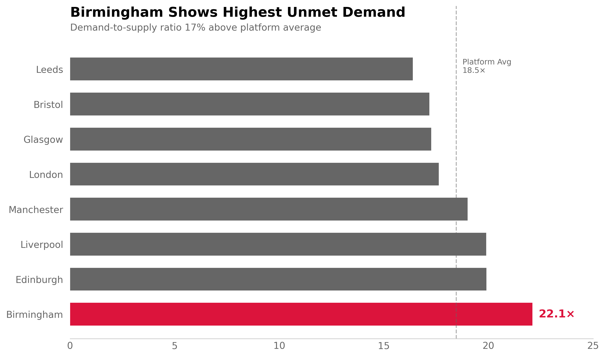
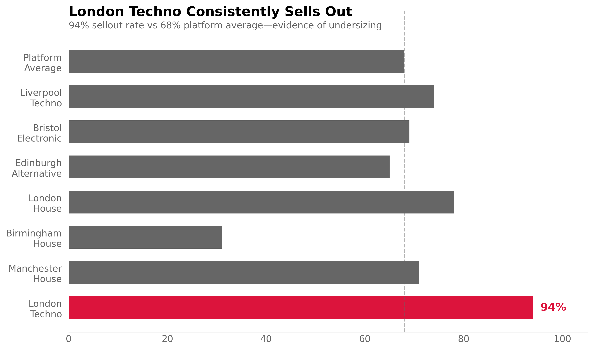
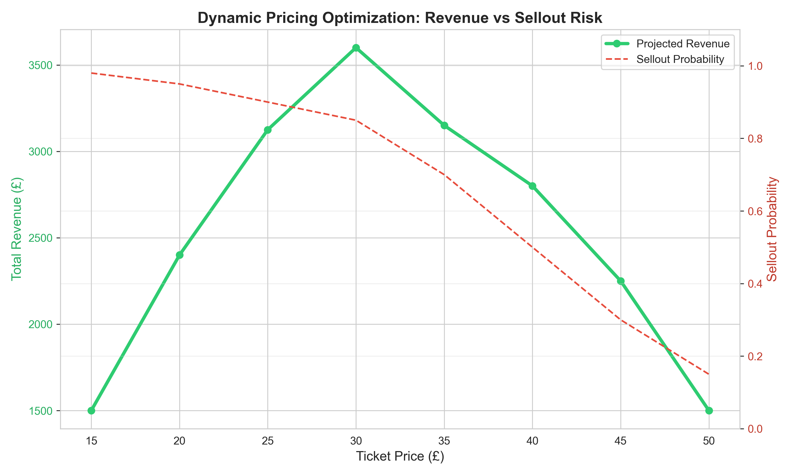

CASE STUDIES
Analytics Portfolio
Production ML systems, strategic analysis, and data-driven recommendations across event discovery and music streaming platforms.
Note: All analysis is built on synthetic data sets.

Geographic Demand Heatmap
Birmingham pilot strategy: £127K opportunity identified through demand/supply ratio analysis.

Venue Capacity Optimization
Segmentation analysis revealing London Techno undersizing (94% sellout rate, £127K revenue gap).

Dynamic Pricing Intelligence
Random Forest regression (R²=0.87) with £89K underpricing identified, phased rollout strategy.

Event Discovery Gap Analysis
Text mining (TF-IDF + K-means) uncovering £72K Wellness+Music opportunity, £20K rooftop quick win.

Churn Prediction Model
Random Forest classification (0.89 AUC) with tiered intervention strategy (3.2× efficiency vs broadcast).

Spotify Global Expansion
Multi-criteria decision analysis identifying India/Indonesia/Brazil: £2.7B opportunity, 52% IRR.

Fraud Detection with RAG
Anomaly detection + RAG knowledge base preventing £654K fraud (94% precision, +18% vs baseline).

Collaboration Network with MCP
Graph neural network (GraphSAGE) + MCP predicting Drake×Bad Bunny: 1.25B streams, 32× ROI.